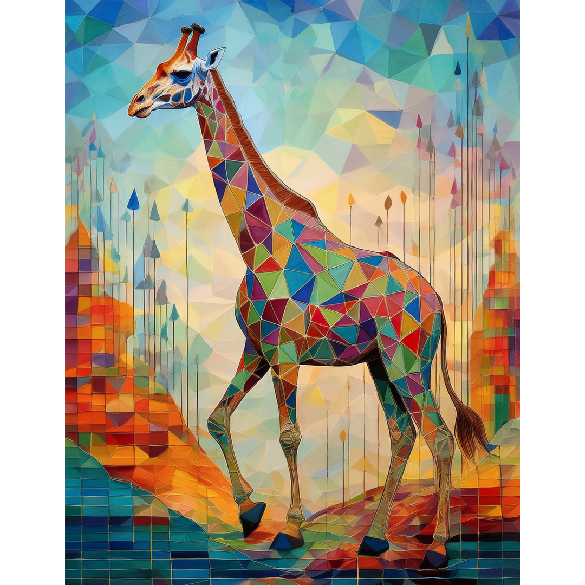
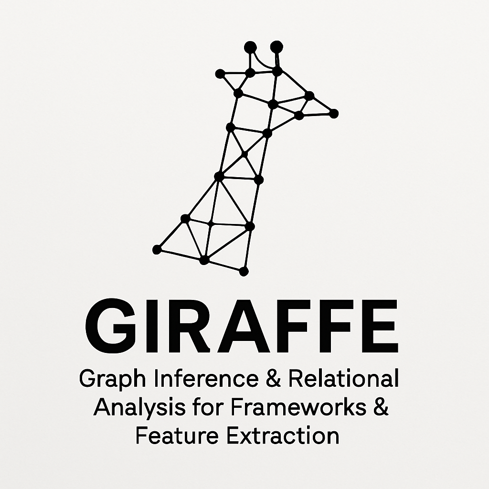

Section GIRAFFE - Undergraduate Research Workshop in Graph Theory and Data Science

- Overview
- This workshop seeks to engage undergraduate scholars, along with their faculty mentors, in an intensive week-long collaboration with students and faculty from other institutions performing original research in the areas of combinatorics and data science. WSSU students and faculty will compose the largest contingent of participants, while participants from five other institutions will be selected through an application process, with applications hosted on MathPragrams.org.
- Logistical Information
- The workshop will be held on the campus of Winston-Salem State University from Sunday, June 16, 2026 through Saturday, June 22, 2026. Hotel reservations will be made for all participants; faculty will have individual rooms and students will be paired with a roommate prior to arrival.
- Sample Daily Schedule
- table here
- Applications are due by March 1, 2024. Applicants will be notified of acceptance by March 15, 2024. To apply, please visit mathprograms.org.
- For questions regarding the workshop, please contact Mark Hunnell at hunnellm@wssu.edu.
- Participants are responsible for arranging their own travel to and from Winston-Salem, NC. Participants will be reimbursed up to $200.00 for travel expenses upon submission of receipts. If this amount presents a financial hardship, please indicate this in your application. All other local expenses will be covered by the workshop.
Subsection About GIRAFFE
Undergraduate research has long been lauded as an efficacious high impact practice, with measurable effect one student engagement, persistence, and post graduate success. GIRAFFE seeks to foster greater community among the undergraduate researchers in the mathematical sciences at WSSU’s peer institutions. Furthermore, the workshop will burnish the reputation of WSSU as a leader in scholastic achievement in the mathematical sciences. Perhaps most importantly, participants will grow their professional network with individuals possessing similar interests, thereby providing the potential for long-term benefits to participants well beyond the end of the workshop.
- Suitability for Undergraduate Research
- Both disciplines require little in the way of prerequisite knowledge in order for students to contribute meaningfully to original research products. While these areas contain significant mathematical depth, must of the required tools can be learned alongside the research activities, rather than prior to them. Furthermore, these areas are highly active and growing, and thus position students seeking graduate school opportunities to identify mentors and programs that will advance their post-graduation goals.
- Problems of Interest to Student Populations
- Combinatorics is a versatile approach to many real-world problems, from the distribution of power across an electrical grid, to disease transmission, to allocation of resources in war zones. The diverse set of applications means that students from a variety of educational backgrounds and with a variety of social justice interests can advance knowledge on topics they find important. Data science is inherently interdisciplinary, and our intent is to have problems focused on healthcare in the greater Forsyth area as well as a marketing problem for students who are interested in the business of sports.
Subsection Intended Outcomes
- Research Products
- Each research group will produce a written report of their findings, suitable for submission to an undergraduate research journal. Additionally, each group will prepare a presentation of their work to be delivered at the conclusion of the workshop.
- Professional Development
- Participants will gain experience in presenting their research, writing research reports, and working collaboratively in research groups. Additionally, participants will have the opportunity to network with peers and faculty from other institutions, potentially leading to future research collaborations.
- Long-Term Engagement
- We intend for this workshop to be the first of many such events, thereby establishing a tradition of undergraduate research in combinatorics at WSSU and its peer institutions. We hope that participants will continue to engage in research activities beyond the workshop, either through continued collaboration with their workshop peers or through independent projects.
Section Project Descriptions
Below you will find the project descriptions. In your application, you will be asked to rank your level of interest in each of the projects. Faculty members and the students from their institution will paired together with a project before the workshop begins. Please email Mark Hunnell (hunnellm@wssu.edu) with any questions.
Subsection Graph Theory Projects
- Project 1: Vertex Fault Tolerant Zero Forcing
- Zero forcing is a graph coloring process that has applications in control of quantum systems and network monitoring. This project will explore vertex fault tolerance in zero forcing sets, investigating the minimum number of control vertices required to maintain control of the system despite a loss of information at an arbitrary subset of nodes. While this variant has undergone an initial study, a large number of open problems remain to be addressed. This includes derived parameters, such as propagation time and throttling, as well as efficient algorithms for computation of bounds on the vertex fault tolerant zero forcing number.
- Project 2: Graph-Based Machine Learning for Image Classification
- This project focuses on applying graph-based machine learning techniques to image classification tasks. Students will explore how to represent images as graphs and use graph neural networks to classify images based on their features. The project aims to improve the accuracy of image classification models by leveraging the relational structure of image data.
Subsection Data Science Projects
- Project 3: Combinatorial Optimization in Supply Chain Networks
- In this project, students will investigate combinatorial optimization problems within supply chain networks. They will model supply chains as graphs and apply optimization algorithms to improve efficiency in logistics, inventory management, and distribution. The objective is to develop strategies that minimize costs while maximizing service levels in supply chain operations.
- Project 4: Analyzing Biological Networks Using Graph Theory
- In this project, students will analyze biological networks, such as protein-protein interaction networks or gene regulatory networks, using graph theory techniques. The goal is to identify key components and interactions within these networks that contribute to biological functions and processes. Students will apply various graph algorithms to uncover insights into the structure and dynamics of biological systems.
Section About WSSU
Winston-Salem State University is a bold, vibrant and diverse academic community that fosters the creative thinking, analytical problem-solving, and depth of character graduates need to transform themselves and their world. These values embody our motto, “Enter to Learn. Depart to Serve."
Founded in 1892, WSSU enjoys a distinguished reputation as a historically black constituent institution of the University of North Carolina that offers a rich curriculum rooted in a high-quality, liberal education. Our undergraduate and graduate students can choose from many innovative areas of study designed to equip them with the skills and knowledge needed to develop creative solutions to today’s—and tomorrow’s—complex problems.
It all starts here.
Colophon Colophon

This website was authored in PreTeXt.